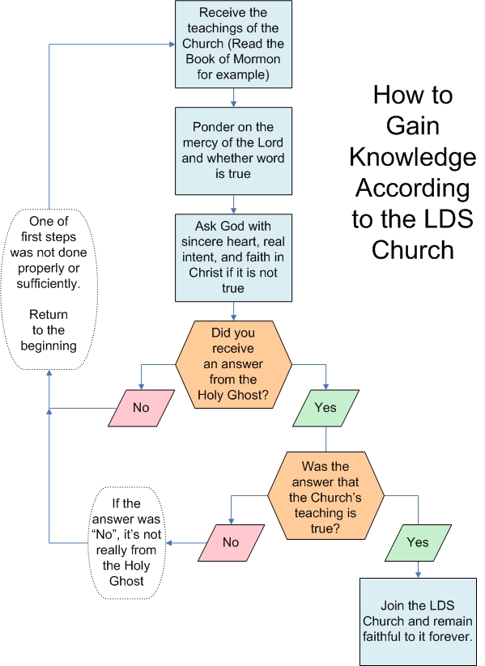
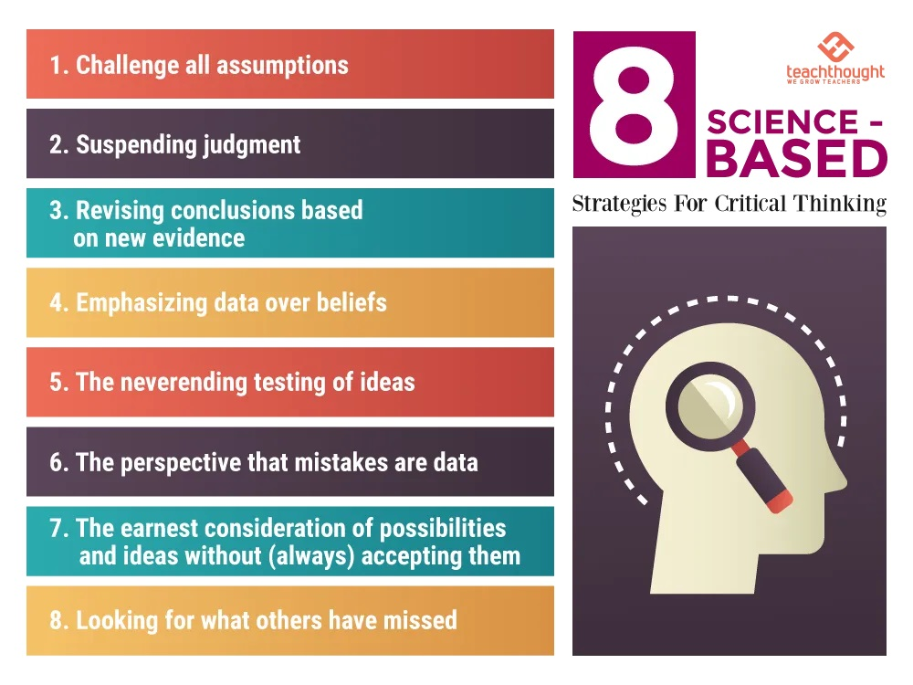

If I wanted to encourage thought and try to understand devout believers better, I might ask:
“How well does the Book of Mormon promise work?”
Things to consider:
The Book of Mormon promise is that you can know if the things in the Book of Mormon are true by asking God. In other words, rather than relying on your own imperfect reasoning and faulty perceptions, you can receive knowledge about the book directly from the all-knowing, all-powerful, and all-caring God. Since such knowledge would be from the ultimate and infallible source, this would be sure knowledge that could be relied upon beyond the confidence you could have in knowledge obtained by merely human means.
The promise is found in the last chapter of the Book of Mormon, where Moroni exhorts his brethren, the Lamanites, to follow this process to know if the records he’s about to seal up (the plates the Book of Mormon reportedly comes from) are true:
Behold, I would exhort you that when ye shall read these things, if it be wisdom in God that ye should read them, that ye would remember how merciful the Lord hath been unto the children of men, from the creation of Adam even down until the time that ye shall receive these things, and ponder it in your hearts.
And when ye shall receive these things, I would exhort you that ye would ask God, the Eternal Father, in the name of Christ, if these things are not true; and if ye shall ask with a sincere heart, with real intent, having faith in Christ, he will manifest the truth of it unto you, by the power of the Holy Ghost.
And by the power of the Holy Ghost ye may know the truth of all things. Moroni 10:3-5
This is written to the Lamanites, but the Book of Mormon and modern Mormon prophets teach to apply all scripture to yourself, so this scripture is used by the Mormon Church as a pattern for all to follow so they may know whether the book, or anything else, is true. This is confirmed in the Introduction to the Book of Mormon written in 1981 (8th and 9th paragraphs). In fact, Mormon missionaries are instructed to teach this pattern to those who would listen so they can know the truth (Preach My Gospel, pp. 43, 90, 110, 125, and other pages). Since this is a key method used by Mormons to understand the truth, I think it would be important for anyone interested in Mormonism to scrutinize the promise.
Notice that verse three of the promise asks the reader to ponder but not to ponder on the evidence for or the merits of the material read. In fact, general leaders of the Church have indicated that researching such things is inappropriately prioritizing on “secondary questions” and that such “research is not the answer.” In this vein, Moroni exhorts the reader to ponder on “how merciful the Lord hath been.” This suggests to the reader a debt of gratitude. As a social being, a normal human would want to reciprocate the mercy spoken of, so if the reader believes this mercy has been extended, it primes the reader to want to do what the Lord desires, and implicit here is that these things are given to the reader in the wisdom of God—that God wants the reader to accept these things. This desire to reciprocate would tend to lead to a desire to believe regardless of the material being presented and its merits. Reasoning motivated by something other than the desire to understand the truth is called motivated reasoning, and motivated reasoning leads to all sort of beliefs that are not justified by evidence and that often contradict one another. (See also my If I could ask … Lesson 28 about Alma 32 and how it leverages cognitive biases to persuade people)
Verse four lists the minimum criteria of effort a person must make if they are to know the truth by this method. In order to receive the promised knowledge, you must ask God with a sincere heart, with real intent, and having faith in Christ. One of the unfortunate things about these criteria are that they are impossible to measure. As a result, if this process doesn’t work to let you know that the Book of Mormon is God’s word, then it can always be assumed it is your fault. Built right into this verse are reasons believers can always use to explain why you didn’t get the “right” answer. If you didn’t get the accepted answer, you didn’t ask with enough sincerity, real intent, and/or faith. So, if any truth claim is framed with this process as the way to gain knowledge of the claim, the believers will always think they know why you didn’t get the “right” answer. (see diagram below)

This type of situation is often called a double bind—a situation in which you are given a choice or dilemma, but there is no good choice. Either way, you fail. If you ask if the Book of Mormon is true and conclude it is not what it claims, according to verse four, you failed to ask with sincerity, real intent, and/or having faith in Christ. The dilemma is that you either stop trying to believe and are blamed for these failures, or you continue trying to believe even if you have gone beyond your due diligence. Unless you continue trying until the day you die, a Mormon can always say you didn’t get the “right” answer because you were not diligent enough in following the criteria of verse four, even if you tried for decades before dying.
Consider the effect of Jehovah’s Witness (JW) missionaries teaching a person they will know the JW Church is Jehovah’s only authorized organization if they ask Jehovah with a sincere heart, with real intent, and having faith in Jehovah. What kind of effect or influence might this have on a person studying with the Jehovah’s Witnesses?
Which leader said this about asking God if a teaching is true?
I hope for your sake that you at least ponder this—that you go into the privacy of your closet. Don’t ask your neighbors, your friends what they think of this. You go see if you can connect with the purest, the highest source that you might consider God and say, “What about this? Is this for real? Is this for me? If it is, then give me the strength,” because as soon as you tell anyone else, they will be used as the instruments to have you not believe.
It was Marshall Applewhite, leader of the UFO cult Heaven’s Gate who convinced himself and 38 others to commit suicide in March 1997. The quote starts at about 56:14 in this video.
The LDS Church teaches that prayer is how you can know if it is God’s will that you join the Church. But, “A common technique among religious cults is to instruct people to ask God what He wants them to do. Members are exhorted to study and pray in order to know God’s will for them” (Steven Hassan, Combatting Cult Mind Control, p. 70).
Verse five teaches that it is by the power of the Holy Ghost that you can know the truth of all things. If the power of the Holy Ghost were a reliable way to discern the truth, why are there many examples of the Spirit of God convincing people that their Church is God’s only true church? Here is just one video with many examples of folks who know by the Spirit of God that their Church is God’s only true Church:
If the power of the Holy Ghost were a reliable way to discern the truth, why did the son of my first stake president have a spiritual experience in which he said the Holy Ghost told him the Catholic Church was God’s only authorized Church on earth? If the power of the Holy Ghost were a reliable way to discern the truth, why did a prophet and seer warn us we can be fooled by false spiritual messages and even our own emotions (The Candle of the Lord by Boyd K. Packer)? If the power of the Holy Ghost were a reliable way to discern the truth, why did I feel what I would only have previously described as the promptings of the Holy Ghost upon praying if leaving the Mormon Church was the right path for me?
If you Google something like “my conversion to _____” and fill in the blank with any large religion like Catholicism or Islam, you’ll easily find many examples of these folks claiming the Spirit of God told them their Church is true. In addition to this, Pentecostalism and Charismatic Christian movements emphasize experiencing God through the Holy Ghost, and as a result many of them “know” their brand of religion is true (which means they “know” yours isn’t true if you’re not one of them). How could you explain this as a believing Mormon? Would you tell them they have mistaken their own feelings, promptings of the devil, or the effects of social pressure for promptings of the Spirit? Couldn’t they say the same of a Mormon spiritual experience? In summary, I cannot see any way to distinguish Mormon spiritual promptings from the spiritual promptings others receive telling them their Church is God’s only true Church.
But, you might say that a person can know if their spiritual promptings are really from God if they align with the teachings of the Mormon prophets. Isn’t that faulty reasoning? It would be something to the effect of,
I know the Mormon Church is true because I had a spiritual experience, therefore
Mormon prophets speak for God because the Church says so, therefore
I know spiritual experiences reveal the truth because that’s what the prophets teach, therefore back to step 1.
The shape of this reasoning is just too circular for me.
Besides, isn’t deferring to the teachings of 15 very old men putting trust in the arm of wrinkled flesh? (see 2 Nephi 4:34 and 2 Nephi 12:22)
Not only are the unique truth claims of the Mormon Church extremely extraordinary (meaning they go beyond the realm of the natural world; require belief in things that cannot be measured, recorded, or reliably reproduced; and they seem to be counter to the preponderance of scientific evidence in pertinent fields of study); but the Church requires extraordinary sacrifice based on these claims. When you are asked to join the Mormon Church, you are asked to dedicate everything to it—tithing, talents, two years for a mission if you’re a young man, literally everything including your life if you’ve received your Mormon temple endowments. If you’re being asked to dedicate so much, shouldn’t the method of determining whether the Church is true or not be objectively and demonstrably reliable? But, given what I’ve explained here, isn’t the Book of Mormon promise about how to know the truth about as subjective and demonstrably unreliable as it gets? Could this be part of why Mormon testimonies, though claimed to be sure knowledge, seem so fragile and must constantly be fortified and shielded from outside information?
More than once in the past when I have brought up the unreliability of using spiritual experiences to discern truth, I have been accused of denying that spiritual experiences happen or that a believer’s spiritual experiences are not real. I have never claimed that, and I give each believer the benefit of the doubt that they have had spiritual experiences. I had many of them as a believer, and I continue to have them as a former Mormon. I do not dispute these experiences happen. I only dispute how Mormonism and others interpret these experiences. They’re a horrible way to try to understand what is true, but these experiences are real. In fact, they are beautiful. They often inspire us to be the best humans we can be; to bear one another’s burdens, that they may be light; to mourn with those that mourn; and comfort those that stand in need of comfort. Not only do I think they are real, I encourage anyone to try to seek out spiritual experiences. I do not think they come from some outside source often called the Spirit, but that’s actually irrelevant. Whatever the source, spiritual experiences can help you find or make meaning/purpose and joy in life.
If the challenges of knowing through the power of the Holy Ghost interest you, you might want to read the essay I wrote about this several years ago, Mormon Epistemology. It covers much of the same information but is personalized with my Mormon story and has a broader scriptural scope.
A Better Alternative – Science-based Critical Thinking

Learn more about these 8 science-based strategies for critical thinking at TeachThought.com
The purpose of science and critical thinking is to minimize the biases and other challenges to our thinking. Leveraging principles from both the scientific method and critical thinking can help you learn better and have more rationally justified conclusions. I think this is important because I think each of us has a moral obligation to make sure our beliefs are rationally justified (see The Ethics of Belief).
Can you rationally
justify giving 10%
of your income to
an organization
that will not
disclose finances?
I take it as a given that this does not apply to all beliefs. Some beliefs are of little consequence. For example, it’s probably not worth much effort to fully rationally justify a belief that I have milk in my fridge at any given moment. On the other hand, if given an opportunity to invest your life savings in my crazy Uncle Fred’s latest business venture, I suggest you would be well served by first investing the time to come to a rational conclusion about the opportunity. There is no fool-proof way to understand what is real and what is not, but science-based critical thinking can help you avoid many of the pitfalls of irrational thought. For example, depending on your situation, these eight thinking strategies could save you 10 percent or more of your income.
Providing information to counter false claims has its place, but you don’t need an A-BoM to blow up false truth claims. I think you’d do better to teach and encourage people to use science-based critical thinking. That’s what I did with my kids. I didn’t tell them about the problems with the Mormon Church. I encouraged them to critically examine truth claims in general—to think for themselves. All five of my children concluded on their own that the Mormon Church is not what it claims, that its leaders do not speak for an all-loving God.
I find the evolution of spiritual gifts from the founding of the Church in 1830 to present day interesting (Moroni 10:15).
I think the association between despair and iniquity is overgeneralized and therefore harmful (Moroni 10:22).
The good news seems to fear monger and blame those who do not see miracles (Moroni 10:24-26).
If you’re a former believer or otherwise non-Mormon, beware. The Come Follow Me Lesson instructs believers to “think about someone who needs to hear [their] testimony of the Book of Mormon.” Then, it asks them, “How will [they] help that person [like you] seek his or her own witness?” (Come Follow Me Manual for Moroni 10)
If you could ask believers questions about the scriptures for this lesson, what would you ask?
Have fun studying!
« Previous
If I could ask them one question, Lesson 49